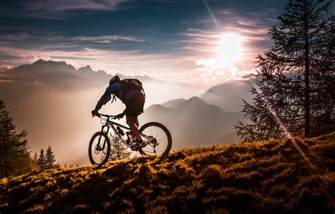
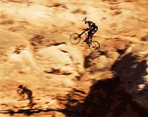

One way it impacted me positively was seeing that being outside in nature could be a lot more fun than I originally thought. When I was younger most of the experience I had with nature was hikes I was forced to go on. Videos from Redbull and other companies showed me how fun it could be being outside.
Another way it impacted me positively was showing me that pretty much anything can be done if you commit to it and repeatedly try. In many of the videos they also show all the times they failed before getting it right which is great inspiration to me to keep trying something even when I can't originally get it right.
